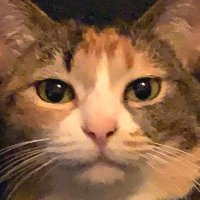

👏 リリースされました！
みなさんこんにちは、Twitterのちくわ（@chikuwa_cats）です。
ワタクシ、ちくわは音楽ユニット、ニューロナのリーダーをやっています。
集まってくれた49匹のカワイイ猫ちゃんたちで埋め尽くされたジャケットとともに、楽曲「四足のヒーロー」が大手音楽配信ストアよりリリースされました！パチパチパチー！👏👏👏
49匹のヒーローズたち、ありがとう！！
みんな、カッコいいにゃ〜 🐱
音楽ストアはたくさんあってね、みなさんがサブスクとかで聴けるのであれば こっちからダウンロードしてね！
例えばApple Musicだとこう
ミュージックビデオにも参加してもらったよ！
いえーーい！そしてなんと！ジャケットに参加してくれた猫ちゃんたち、今回特別につくった「四足のヒーロー」のミュージックビデオにも参加してもらったよ！
もちろん、飼い主様には事前に承諾をもらった猫ちゃんだけ、こちらは出演してもらってます。
みーんな、いい顔してる！！😺
🐈 永久保存版です
とくに地球がぶっ壊れたり音楽ストアがなくなったり、または猫缶がこの世から消えない限り「四足のヒーロー」も消えることはありません。
どんなに時がたっても、この曲とともにあなたの猫ちゃんが「四足のヒーローズ」だってことを忘れずにいてくれたら、ちくはとっても嬉しいにゃ！
このページ、自由にシェアしてにゃ
よく「シェアさせてもらっていいですか？」って聞かれるけど、もちろん！自由にお友達のニンゲンや猫ちゃんたちにシェアしてくださいね！
 ちくわより